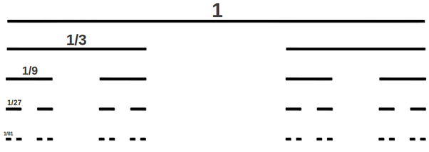

Cantor set

Cantor set is uncountable and has Lebesgue measure 0.
It is self-similar: it consists of two copies of itself scaled by the factor of 1/3.
Cantor set is an invariant set for the times-3 map.